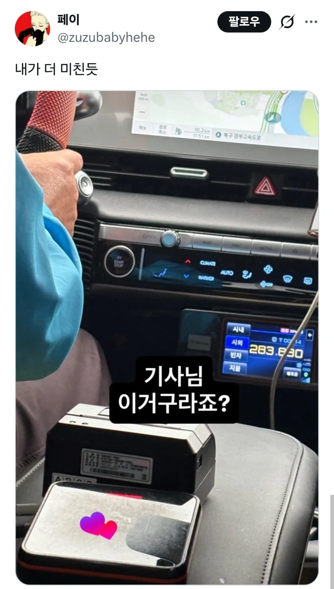
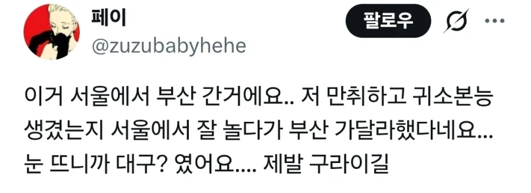

택시기사 "부산 야호!"


택시기사 "부산 야호!"
평일에 돈존나 많으신가봐요 ㅋㅋㅋㅋ
일주일에 2번씩 10만원씩 서울밖으로 자주나갈수있겠네 서울에서 택시장사하면되겠다야
왠 일주일?
우선 폰팔이하곤 다른게 폰팔이는 먼저 손님을 속여먹으려는 기망 행위가 있었으니 문제되는거고 오히려 이 건은 술취한 손님이 먼저 폰팔이한테 '이러이러한 서비스 가입하고 싶다'라고 말꺼낸거에 가깝지 심지어 그걸 전부 녹화 녹음하고 있던 상황이고
위에 다른 예시 중 손님이 아무말 안했는데 부산이 집일거 같아 출발했다 급은 되어야 폰팔이가 손님한테 필요한 서비스 같아서 알아서 가입했다 급하고 비교 가능할껄?
근데생각보다 많이안나온 느낌이긴하네
가는 중간이고 강남에서 부산해운대까지 38만원에 톨비까지 하면 40넘는데...?? 최저시급 만원 계산하면 주40시간 즉 일주일 넘게 일해야 벌수있는돈임ㅋㅋ
이거저거 빼면 택시기사한테 남는게 20 좀 넘을테고
서울 갈 때는 빈차일거 생각해봐
야근 특근한 하루 일당으로 따지면 그냥 적당 수준임
???: 버산야허
상어 보러 갑시데이
저번에 어떤 유튜버가 아무택시 잡고 전국일주하는 컨텐츠 했다가 그 택시기사님 짤렸다던데 서울택시면 서울에서만 영업해야하고 부산택시는 부산에서만 영업해야한다고 저렇게 서울에서 부산은 가면 안된다고
그건 아님
유튜버가 팁 준걸로 신고 받은거임
서울택시가 부산까지 가는건 문제 없음
서울택시가 부산에서 손님을 태우는건 안되지만
아항
서울대전대구부산
찍고
좀만 늦게깻으면 40만원인데 ㄲㅂ
한국 택시비 어떻게 저렇게 저렴한지 이해가 안 됨
얼마전 일본놀러가서 밤에 택시탔는데 9만원 나오더라 식겁했다...
유니버셜에서 도톤보리까지 5만원나오던데.ㄷㄷ
서울에서 대구 28만원이면 싼데?
28만원 대구였을때니.. 한 55만원 나왔을듯
이걸 가주시네?
술취해서 사람패고 몰랐다하면 무효 될 수 있는건가
가격보니까 명절에 ktx 표 못산사람 모아서 택시타면 괜찮겠다
흔하다는게 명절기준이고 ㅋㅋㅋ병신아 평일누가 십만원내고 누가 흔히나감ㅋㅋㅋ 돈존나많음?ㅋㅋㅋ